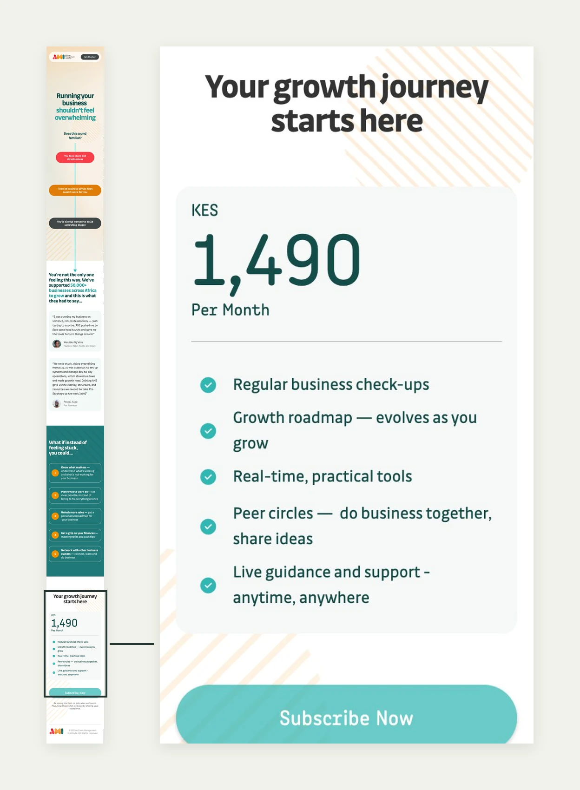
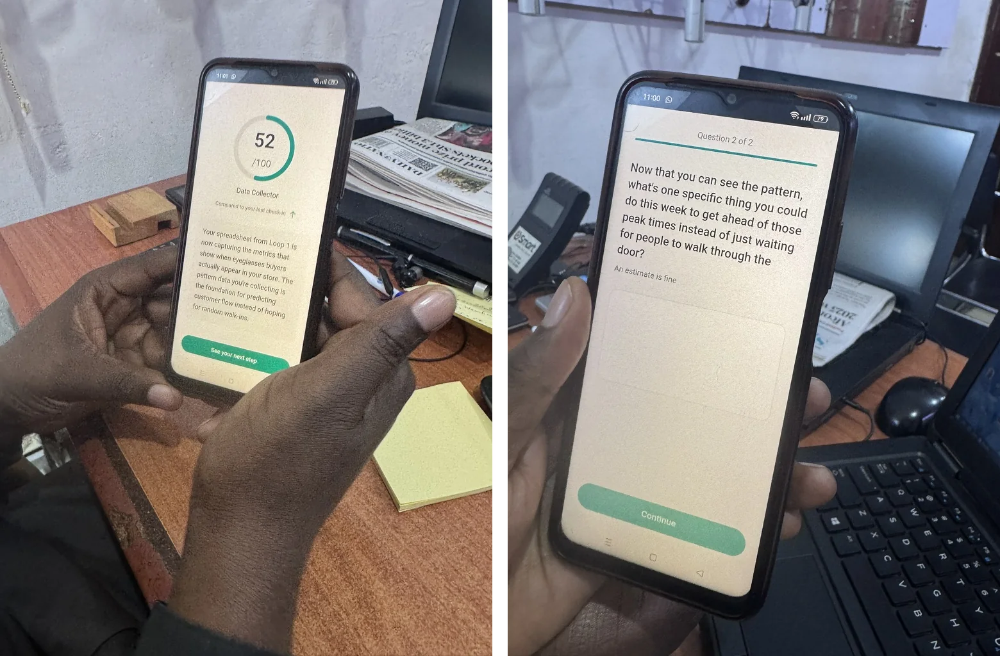
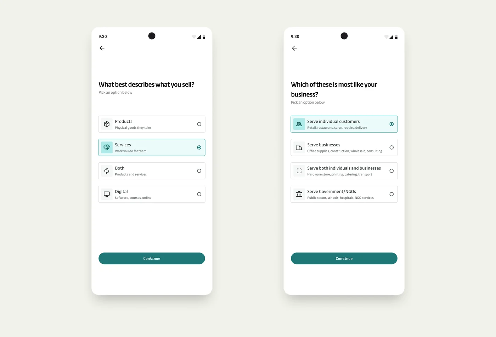
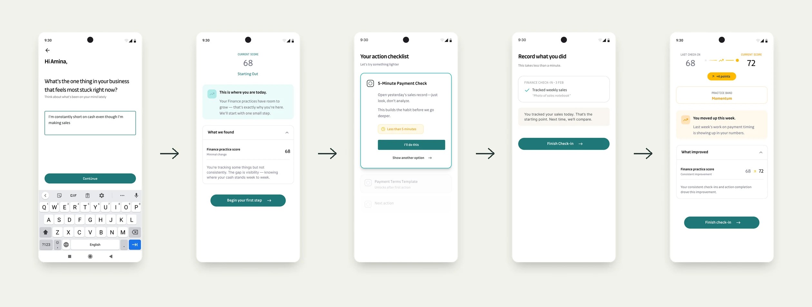

Small business owners told us they were stuck, not short of courses. We designed a weekly companion that gives them one useful insight in 4 questions, so they have a reason to come back.
15
SME owners interviewed across Kenya, Nigeria and South Africa
424
leads against a target of 200
6 of 7
testers found the AI insights accurate
Team: A product manager, the CEO, the CPTO, the Director of Marketing, the marketing team and meTimeline: Jun 2025 to Feb 2026My role: Customer research, value proposition (with the PM), UX, conversation and visual design, prototype build, user testing, landing page design and build, A/B test setup
The situation
AMI has trained entrepreneurs for years, mostly through partner programmes that someone else pays for. In mid-2025 it wanted to know whether owners would pay for a growth product directly, with nobody in between. We called it D2E, direct to entrepreneur.
We had three questions, in order. What do owners actually struggle with? Will they sign up for something that helps? And once they do, will it give them a reason to come back every week?
What research told us
In the last week of June 2025, each member of the squad went out and interviewed SME owners in person: 15 in total, 11 in Kenya, 2 in Nigeria and 2 in South Africa. We told them we weren't selling anything, visited their premises where we could, and let them describe their problems in their own words.
Finance came up most. 11 of 15 owners named access to finance as a challenge. But when we looked at what sat behind it, the picture changed:
10 of 15 struggled to find and convert customers
9 of 15 were "doing everything" themselves, with no time to plan
8 of 15 couldn't tell whether they were making money, or how to price
7 of 15 had nobody they trusted to think things through with
Finance was the loudest problem, not the root one. Most owners lacked clarity on where they stood, and the time to step back and find it. The real blockers were overwhelm, isolation and low confidence. We wrote it up as one problem statement in the owner's voice:
"I'm stuck. I know I need more sales, more cash and better systems, but I don't know what to focus on. I'm juggling everything, and I don't have the guidance or support to move forward with confidence."
Two things they said shaped everything that followed. One owner told me plainly: "If it is complicated, I would not use it." Another said: "I would pay for someone to hold my hand. I don't want someone speaking at me." One owner said the interview itself felt like therapy.
The principle: value in a short moment
These owners had no spare hour. Another course would not help them, and a long diagnostic would lose them before it gave anything back. Whatever we built had to show its value fast, in a short moment of reflection between everything else they were doing.
That became the constraint for the whole product: get an owner to one meaningful insight about their business in 4 questions. If the first insight felt true and useful, they would have a reason to come back for the next one. If it didn't, nothing else we built would matter.
The same research set the tone. Owners wanted a guide, not a lecture. So the product had to sound like a coach who knows your business, not a form collecting data about it.
Reframing the product
Our first direction was drifting towards an updated version of AMI's existing business diagnostic. It would have told owners where they stood once, and then left them there. That answered the clarity problem but not the one underneath it: owners needed to keep moving, not just be assessed.
So we stepped back and defined the product as a behaviour engine instead. Four steps, repeated every week:
Assess. A short check-in to see where the business stands
Improve. One small, prioritised action tied to the biggest gap
Prove. A simple record of what the owner tried and found
Repeat. The next check-in picks up from last week
The loop is the product. Everything else, including AI assistance, nudges, reporting and community, sits on top as an optional layer that improves the experience without the loop depending on it. Finance was our first test area, but the loop was built to carry sales, operations, digital and people as well.
Testing demand
Before building further, we needed to know people would sign up. We ran the campaign in Kenya and Nigeria at the same time, so one test answered for both markets. I designed and built the landing pages and their graphics in three weeks, from strategy discussions to launch, and set up the A/B tests with the marketing team, who supplied the social imagery. The campaign ran for 14 days, with a short extension after a brief payment disruption.
The page asked for a small monthly fee, and borrowed its social proof from alumni of AMI's other programmes. It brought in 424 leads against a target of 200.
The numbers also told us how to build. 91% of visitors were on a phone, so the product had to be mobile first. Most visitors skipped the top copy and went straight to the sign-up section, and 61.5% came back more than once before signing up. People were interested, but not yet sure they could trust us. Trust became a design problem from day one.

The mobile landing page, with the pricing card enlarged. Owners signed up knowing the product would carry a monthly fee.
Designing the loop and the conversation
I designed and built a working prototype of two rounds of the weekly loop, so we could test whether week two felt connected to week one:
Loop 1: 4 diagnostic questions, then a score and an insight written for that business. The owner picks one small action and later records what they found.
Loop 2: a check-in that names what they found last week, 2 new questions, an updated score and a new action that builds on the first.
Debrief: how it felt, and whether they would open it again.
The first insight arrives after 4 questions. Everything after that, choosing an action and recording a result, is the owner acting on something they already find useful.
I designed the conversation and wrote the content that shaped it. The diagnostic establishes where the business stands in plain language, with one question per screen. The check-ins are written to feel like time with a coach: they ask, they remember, and they suggest one thing at a time.
For the prototype, an LLM generated the insights live, so owners reacted to what the product would actually say to them about their own business. I kept it on a short lead. It was not a chatbot, and owners never "talked to the AI". Each step asked it for one job: read rough answers, return an insight of one or two sentences, and suggest one action. No teaching, no theory, no open-ended advice.
The voice was analytical, not motivational. These owners already run businesses, so "working capital" landed better than "money management", and praise without substance read as patronising. The test I wrote for every line was whether the owner would feel seen, not surveyed.
Image: one owner's answers beside the insight and action they produced, annotated with the rules the AI followed
The architecture kept AI as an optional layer, so the loop would still work if the insights came from simpler logic.
What testing found
I tested with 7 SME owners between 21 and 30 January 2026, against four questions. Does it feel like a coach or a form? Are the insights accurate for their business? Does week two remember week one? Would they come back?

A tester working through Loop 2 on his own phone: an updated score with an insight built on last week, then a follow-up question.
The core loop held up. When the AI read the business correctly, owners recognised themselves in the insights. "I almost thought they had background information," one said.
Felt like coaching, not a survey: 5 of 7
Insights accurate for their business: 6 of 7
Noticed week two built on week one: 5 of 7, though 2 needed it pointed out
Would come back: 4 yes, 2 maybe, 1 no
Three things would have broken it at launch:
The AI misread the business model for 1 of 7 testers, a CEO. It treated a mostly retail business as B2B. When that happened, trust in every other insight dropped.
The "Capture what you found" step confused 3 of 7. That step feeds week two, so confusion there breaks the loop. "This is not clear. What do I need to do?"
Nothing said what happened to their data. "How private is private?" one owner asked, at the exact point we needed them to come back.
Testing also sharpened who this was for. Founders 3 to 5 years in, without much operational structure, liked the weekly "homework". Owners with 7 or more years and their own tracking systems saw less value for themselves, though one said he would recommend it to the founders he mentors.
Outside the planned sessions, I also walked a senior CFO through the flow for informal feedback. The business model questions tripped him up as well, and the insight and action felt too simple for someone at his level. It wasn't part of the test plan, but it confirmed the same pattern from the other side.
Key decisions
Most of the fixes were content decisions. Each one goes back to something owners told us in June.
Ask for the business model instead of guessing it. Two direct questions up front: what you sell, and who you sell to. One wrong guess undermined every insight that followed. A coach who knows your business doesn't assume.

Two questions added after testing, so the AI starts from the owner's own answer instead of a guess.
Put an example in every reflection prompt. "What did you discover? Example: 'Corporate clients pay in 7 days'." An empty box asks owners to work out what we want. An example shows them, in seconds.
Say where the data goes, at the moment of return. "Your data stays private. We don't share unless you choose to." The landing page had already shown people were interested but cautious. This line sits exactly where that caution would stop them.
Make memory visible. "Last week you discovered [X]. Let's build on that." The product already carried last week forward, but 2 of 7 owners only noticed when we pointed it out. Owners asked for someone checking in on them, so the check-in has to show it remembers.
Design for the phone. One question per screen, no PDFs or spreadsheets, chat-style interaction where it fits. 91% of visitors were on a phone, and "if it is complicated, I would not use it."
Launch to the segment that wanted it. Newer founders, 3 to 5 years in business, rather than every SME owner.

The loop after testing: one small action, a record prompt with an example, and a week-two check-in that names what last week found. Scroll sideways to follow it.
Designing the conversation for launch
Fixing the three blockers changed more than three screens. Testing showed that the words carried most of the weight, so I redesigned how the conversation opens, what it calls things, and how it invites owners back.
Open with the owner's words, then confirm. The first screen asks one open question: "What's the one thing in your business that feels most stuck right now?" The AI suggests an area, such as "This sounds like a Finance challenge. Does that feel right?", and the owner confirms or picks from a list. I rejected a plain list, because testers described symptoms, not categories. "I can't make payroll" doesn't obviously read as Finance to everyone. I also rejected letting the AI route silently, because a wrong guess after a thoughtful answer costs trust with no way back. The confirmation adds one tap and gives every misread a recovery path. Answers outside the product's scope, such as a lawsuit, get an honest reply that names what the product can and can't help with.
Image: entry flow, open question to AI suggestion to confirm or choose from the list, with the out-of-scope branch
Name things the way owners think. "Readiness score" became "Practice score". Readiness implies the owner isn't ready yet, and these owners are already operating. Rounds became "Check-in" plus a date, not "Week 3" or "Loop 3". A week number turns a missed week into a visible failure, and a date gives the same sense of progress without demanding a rhythm.
Invite owners back without guilt. Research told us these owners were already "doing everything", so the next check-in is triggered by what they did, not by the calendar. Finishing an action earns the invitation: "Your last Finance action is complete. See how it affected your score." If nothing happens for a week, there is one nudge that names their action, then silence. There are no streaks and no "you missed" messages. Coming back after a month gets "Good to have you back" and a record that is still intact.
Image: the Home screen across five loop states, from fresh user to returning after a gap
Let the words change as the record grows. The line after each check-in reads differently the first time, the second, the third and after a gap. "That's the starting point. Next time, we'll compare" becomes "Last check-in you started tracking sales. This time you added expenses." The product shows memory in its words, which was the fix for the 2 of 7 owners who missed it.
Image: the same record message across first, second and third check-ins, a score drop and a long gap
Outcome
Research showed what owners needed: clarity, fast, from something that felt like a guide. The campaign showed demand, with 424 leads against a target of 200 in 14 days. Testing showed the weekly loop works for the right owner, and found three launch blockers before any real customer did.
My recommendation was to fix those three issues, launch to newer founders, and measure whether people return in weeks 2 and 3.
Reflection
The 4-question limit taught me that brevity is a trust decision, not just a convenience. With so few questions, every one has to earn its place, and a single wrong assumption, like guessing the business model, costs more than a longer form ever would.
The misread business model taught me the most about AI. Its output has to be aware of what the user already knows. A response to a seasoned CFO and one to a new founder are fundamentally different, and that nuance decides whether the product keeps serving the job the user came to it for.